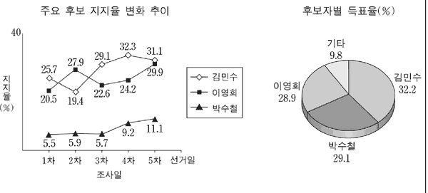

여론 조사 공표
지문을 먼저 읽고, 이해가 막히는 문단에서 ‘그림으로 보기’를 누르세요. 그림은 문단을 따라 바뀝니다.
1문단선거 기간 동안 여론 조사 결과의 공표를 금지하는 것이 사회적 쟁점이 되고 있다. 조사 결과의 공표가 유권자 투표 의사에 영향을 미쳐 선거의 공정성을 훼손한다는 주장과, 공표 금지가 선거 정보에 대한 언론의 접근을 제한하여 알 권리를 침해한다는 주장이 맞서고 있기 때문이다.
2문단[A] 찬성론자들은 먼저 ㉠‘밴드왜건 효과’와 ‘열세자 효과’ 등의 이론을 내세워 여론 조사 공표의 부정적인 영향을 부각시킨다. 밴드왜건 효과에 의하면, 선거일 전에 여론 조사 결과가 공표되면 사표(死票) 방지 심리로 인해 표심이 지지도가 높은 후보 쪽으로 이동하게 된다. 이와 반대로 열세자 효과에 따르면, 열세에 있는 후보자에 대한 동정심이 발동하여 표심이 그쪽으로 움직이게 된다. 각각의 이론을 통해 알 수 있듯이, 여론 조사 결과의 공표가 어느 쪽으로든 투표 행위에 영향을 미치게 되고 선거일에 가까워질수록 공표가 갖는 부정적 효과가 극대화되기 때문에 이를 금지해야 한다는 것이다. 이들은 또한 공정한 여론 조사가 진행될 수 있는 제반 여건이 아직은 성숙되지 않았다는 점도 강조한다. 그리고 금권, 관권 부정 선거와 선거 운동의 과열 경쟁으로 인한 폐해가 많았다는 것이 경험적으로도 확인되었다는 사실을 그 이유로 든다.
3문단[B] 이와 달리 반대론자들은 무엇보다 표현의 자유를 실현하는 수단으로서 알 권리의 중요성을 강조한다. 알 권리는 국민이 의사를 형성하는 데 전제가 되는 권리인 동시에 국민 주권 실천 과정에 참여하는 데 필요한 정보와 사상 및 의견을 자유롭게 구할 수 있음을 강조하는 권리이다. 그리고 이 권리는 언론 기관이 ‘공적 위탁 이론’에 근거해 국민들로부터 위임받아 행사하는 것이므로, 정보에 대한 언론의 접근이 보장되어야 충족된다. 후보자의 지지도나 당선 가능성 등에 관한 여론의 동향 등은 이 알 권리의 대상에 포함된다. 따라서 언론이 위임받은 알 권리를 국민의 뜻에 따라 대행하는 것이기 때문에, 여론 조사 결과의 공표를 금지하는 것은 결국 표현의 자유를 침해하여 위헌이라는 논리이다. 또 이들은 조사 결과의 공표가 선거의 공정성을 방해한다는 분명한 증거가 제시되지 않고 있기 때문에 조사 결과의 공표가 선거에 부정적인 영향을 미친다는 점이 확실하게 증명되지 않았음도 강조한다.
4문단우리나라 현행 선거법은 선거일 전 6일부터 선거 당일까지 조사 결과의 공표를 금지하고 있다. 선거 기간 내내 공표를 제한했던 과거와 비교해 보면 금지 기간이 대폭 줄었음을 알 수 있다. 이 점은 공표 금지에 대한 찬반 논쟁에 시사하는 바가 크다.
㉠을 바탕으로 <보기>를 적절하게 분석한 것은?

그림: 주요 후보 지지율 변화 추이(1~5차 조사)와 후보자별 득표율 원그래프">